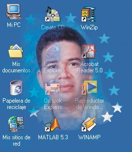

|

|
En este sitio le muestro mis datos personales, mi currículum y otros elementos de interés laboral
... Mi perfil es el de programador de nivel avanzado en ciertos lenguajes de computación; asimismo, soy un usuario avanzado del programa AutoCAD 2002. Si desea ver detalles sobre mi formación, haga click en el botón Currículum a la izquierda de la pantalla. Si desea ver con más detalle cuáles son mis habilidades concretas en computación, haga click en el botón Habilidades a la izquierda de la pantalla. |
| Diplomado en AutoCAD2002 -->Ver Detalles | |
| Diplomado en Redes de Computadoras -->Ver Detalles |